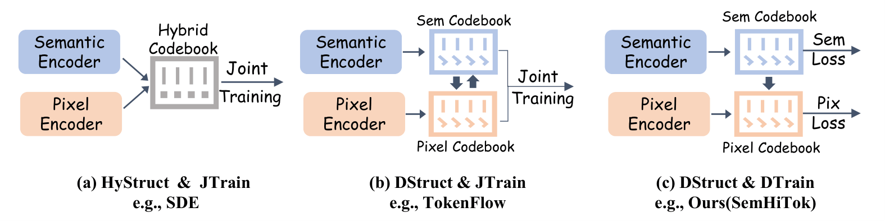
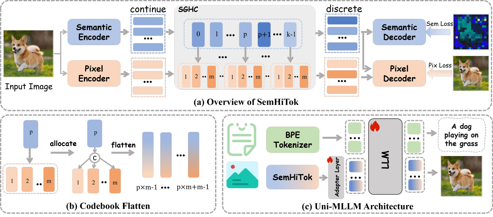
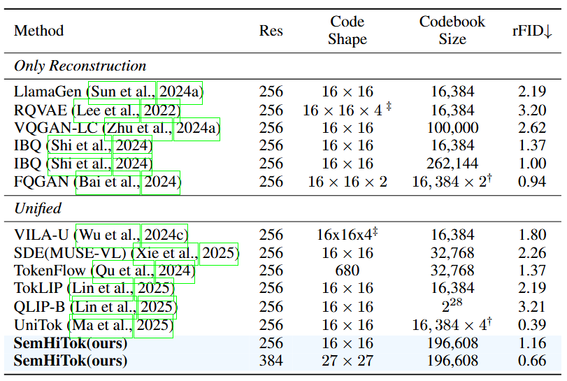
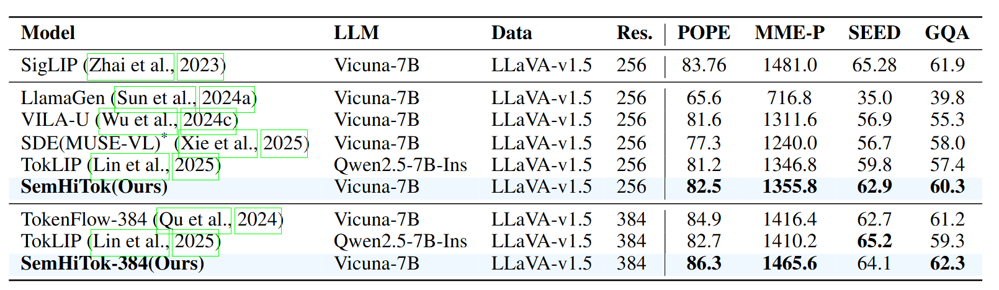
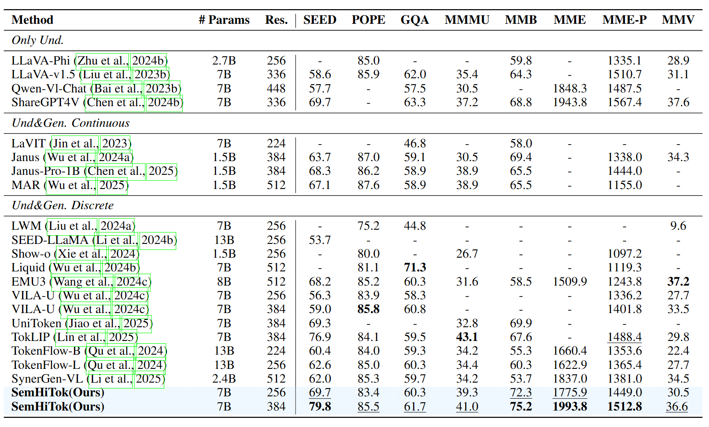
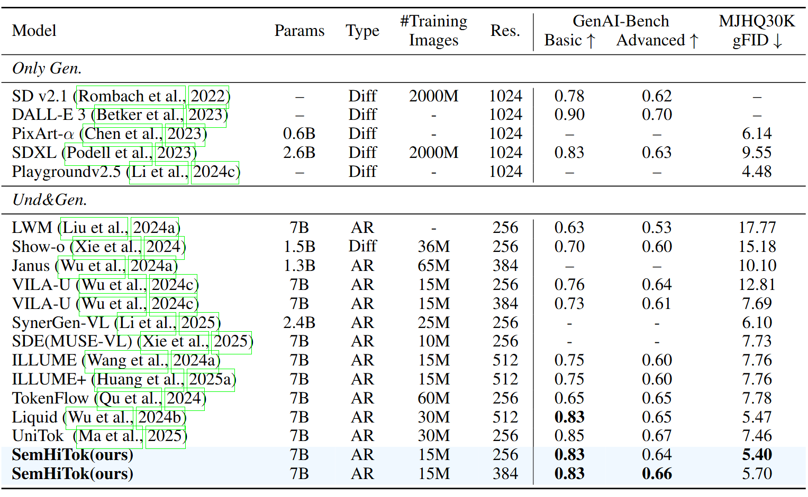

Illustration of other tokenizers and SemHiTok. HyStruct: Using a single model to extract information at different levels; DStruct: Using different models to extract information at various levels; JTrain: Using a joint optimization training strategy; DTrain: Adopt a phased optimization training strategy.
In this paper, we introduce SemHiTok, a unified image Tokenizer via Semantic-Guided Hierarchical codebook that provides consistent discrete representations for multimodal understanding and generation.
Recently, unified image tokenizers have sparked exploration within the research community, which is designed to capture high-level semantic features for understanding and retaining low-level pixel features for generation. Previous works attempt to train a unified image tokenizer by combining loss for semantic distillation and pixel reconstruction. However, due to the differing levels of features prioritized by multimodal understanding and generation, joint training methods face significant challenges in achieving a good trade-off. SemHiTok addresses this challenge through a novel semantic-guided hierarchical codebook, which builds pixel sub-codebooks on a pretrained semantic codebook. This design decouples the semantic and pixel in terms of structure and training strategy, enabling the tokenizer to capture pixel features while retaining its ability to comprehend high-level semantic information.
Our experiments demonstrate that SemHiTok achieves leading performance in image reconstruction and multimodal understanding under the LLaVA-v1.5 setting. Further, we develop a unified MLLM with SemHiTok, which exhibits superior performance across multimodal understanding and generation tasks. Extensive experiments confirm our analysis, showing that our unified image tokenizer architecture achieves a better trade-off.

(a) SemHiTok is structurally composed of two branches: semantic branch and pixel branch. The semantic branch is trained following the VQKD, where the semantic codebook is learned through semantic loss. We propose a semantic-guided hierarchical codebook (SGCH) composed of multiple pixel sub-codebooks, in which each pixel sub-codebook is in a one-to-one correspondence with a semantic code. The selection of pixel sub-codebook is indexed by the semantic code from semantic quantization. To enable a unified discrete representation, we concatenate the quantized semantic and pixel features along the channel dimension and feed the result into the pixel decoder for reconstruction. (b) Each semantic code is allocated to the corresponding pixel sub-codebook, and their features are concatenated along the dimension. (c) An illustration of the unified MLLM framework.
Tab 1. The rFID performance comparison.

Tab 2. The Llava setting performance comparison.

Tab 3. The multimodal understanding performance comparison.

Tab 4. The Text-To-Image generation performance comparison.

@article{chen2025semhitok,
title={Semhitok: A unified image tokenizer via semantic-guided hierarchical codebook for multimodal understanding and generation},
author={Chen, Zisheng and Wang, Chunwei and Huang, Runhui and Xu, Hongbin and Chen, Xiuwei and Zhou, Jun and Han, Jianhua and Xu, Hang and Liang, Xiaodan},
journal={arXiv preprint arXiv:2503.06764},
year={2025}
}